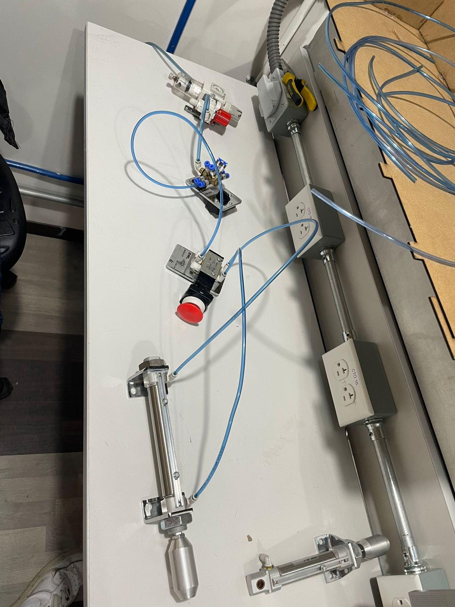
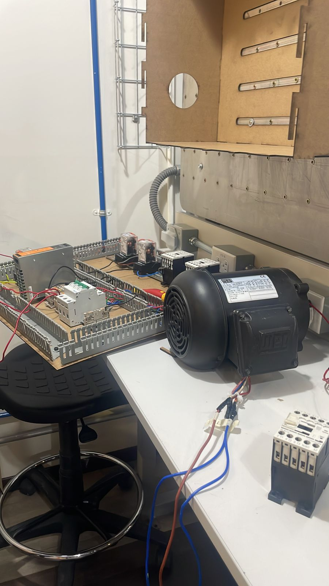
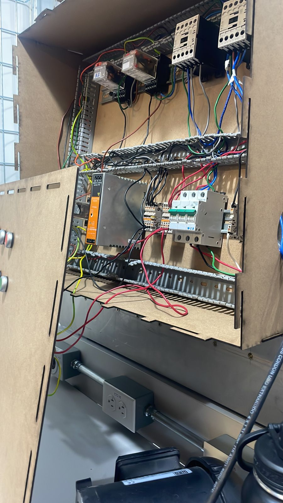

Práctica 5: Neumatica e Hidrauilca
Objetivo
Conocer, investigar e identificar los componentes de los sistemas neumáticos e hidráulicos.
Introducción
La neumática y la hidráulica son tecnologías utilizadas para transmitir energía y controlar el movimiento mediante fluidos. En la neumática, se usa aire comprimido para mover y operar mecanismos, siendo ideal para aplicaciones de baja a media fuerza, como herramientas y sistemas de automatización. La hidráulica, por otro lado, utiliza líquidos, generalmente aceite, para generar movimientos más potentes y precisos, siendo común en maquinaria pesada e industrial. Ambas tecnologías son fundamentales en sistemas automatizados, ya que permiten el control eficiente de movimientos con distintas capacidades de fuerza y precisión.
Materiales
- Fuente de alimentacion
- Botones
- LED's
- Contactos
- Relevadores
- Motor
Desarrollo
Ejercicios de simulación
Armado de manera fisica
  Reportes de practica
Descargar PDF del reporte de Practica 5 Descargar PDF de Tablas comparativas Practica 5Conclusiones
La neumática y la hidráulica son tecnologías esenciales en la automatización y el control de movimiento, ofreciendo soluciones eficientes y versátiles en aplicaciones industriales y de maquinaria. Mientras la neumática destaca por su simplicidad y adecuación para sistemas de menor fuerza, la hidráulica proporciona la potencia necesaria para operaciones más exigentes. La elección entre ambas depende de las necesidades de precisión y fuerza del sistema, siendo ambas fundamentales para mejorar la eficiencia y control en una amplia variedad de aplicaciones.
Volver a inicio